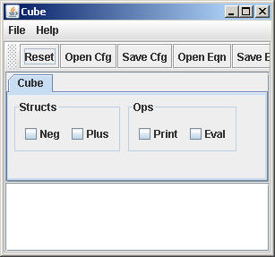
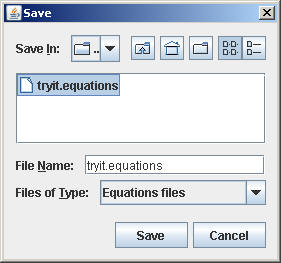

Shows a 2D array, which really is a contraction of a 3D array where the
backplane (test) is composed with the front-plane (no-test).
Shows a 2D array, which really is a contraction of a 3D array where the
backplane (test) is composed with the front-plane (no-test).The expression problem (EP) is a well-known problem (Reynolds 1975; Cook 1990, Krishnamurthi, Felleisen, Friedman 1998; Wadler 1998) in programming languages for how to add new methods and data types in a type safe manner. We view it as a fundamental problem of variability in software product lines. Basically, an EP program creates a parse tree for integer expressions; individual EPL programs differ on the operations that can be performed on such trees (print or toString, eval), the kinds of expressions (integer addition, negation), and the ability to test generated programs.
These pages have been created to illustrate how the EP of software design can be addressed easily in an FOSD context. We present pages that show a 2D array and a 3D array for its design. The axes are:
You are presented with the following graphical icons; by clicking them, you will see a 2D array or a plane of a 3D array:
Shows a 2D array, which really is a contraction of a 3D array where the
backplane (test) is composed with the front-plane (no-test).
 Shows
the front-plane of a 3D array, where no test programs are included in an EPL
design.
Shows
the front-plane of a 3D array, where no test programs are included in an EPL
design.
Shows the back-plane of a 3D array, where test programs to be included in an EPL design are presented.
By clicking these icons, a array will appear below (on the same page), showing the contents of array elements. Each element may have several entries. Clicking on an entry will show the AHEAD file that implements that "variability".
You are now free to explore this design: Click here to view these arrays.
You can use AHEAD tools (which must be installed) to synthesize an EPL. Declaratively specify a program by selecting features from the 2D array using the guidsl tool:
> cd Eprob
> guidsl -m
Note: The implemented design assumes (requires) that there is a test program to run afterwards. So really to build a 3D design would require "decomposing" the 2D array into a front-plane, back-plane, and updating the model.m file. I leave this as an exercise.
Save your design in the file "tryit.equations". 
Then run the batch file:
> build
Which will compose your selected features, translate the generated Jak file into Java, compile the Java file, and will run it.
We have shown how these ideas scale in FOSD. The papers listed below show how SPLs the size of EPL (30-40 line programs) can scale to (30K-40K line programs) by using array designs called Origami. (That is a 1000-fold increase in size). For more information, check out:
Refinements and Multi-Dimensional Separation of Concerns, ACM SIGSOFT FSE 2003.
You can download a zipfile with these web pages and AHEAD
source code by clicking this icon: